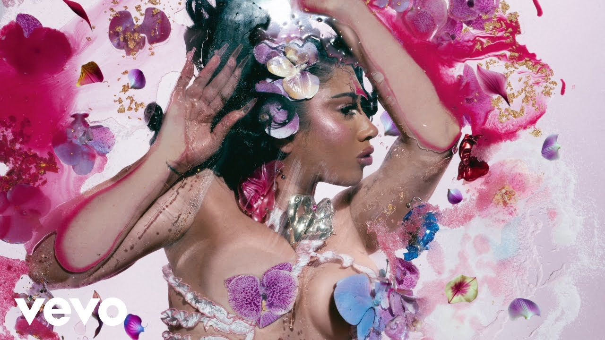
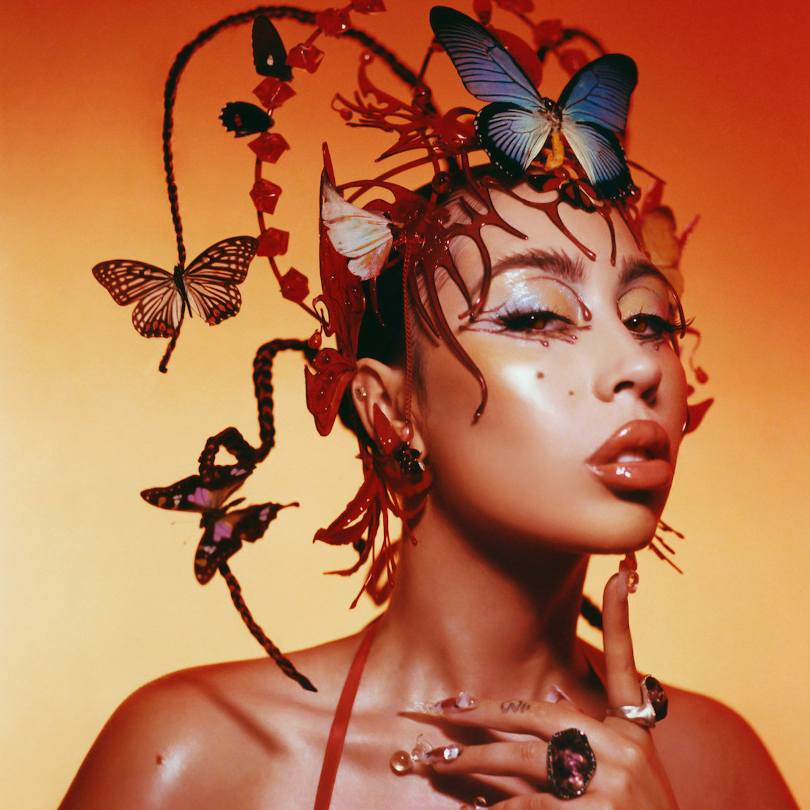
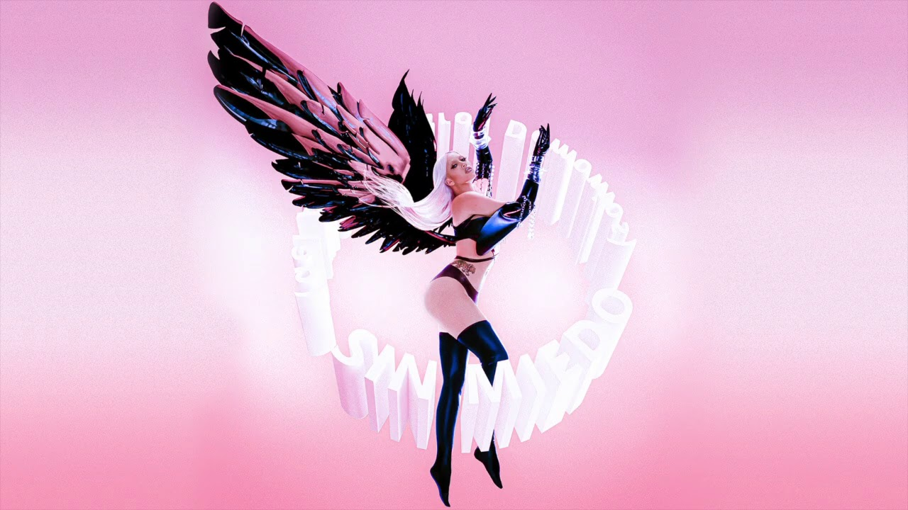
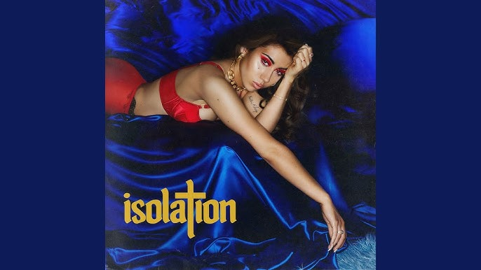
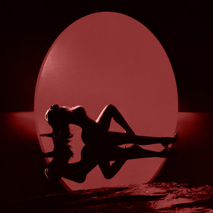

| Imagen | Descripcion | Cancion |
|---|---|---|
|  | Álbum: Orquídeas Géneros: Música tropical, Pop, Dembow |
Igual que un angel |
|  | Álbum: Red Moon in Venus Géneros: R&B/Soul, UK R&B |
Moonlight |
|  | Álbum: Sin miedo (del amor y otros demonios) Género: R&B/Soul |
Telepatia |
Álbum: Isolation Géneros: R&B/Soul, Pop, UK R&B |
After the Storm | |
Álbum: Por Vida Géneros: R&B/Soul, Reggae, Indie pop, UK R&B |
Melting | |
|  | Álbum: Isolation Género: UK R&B |
Dead To Me |
Álbum: Orquídeas Géneros: Música tropical, Pop, Dembow |
Labios mordidos | |
Álbum: The Angel You Don't Know Género: Synth pop |
SAD GIRLZ LUV MONEY | |
|  | Álbum: Red Moon in Venus Géneros: R&B/Soul, UK R&B |
Moonlight (speed up) |
Álbum: Red Moon in Venus Géneros: R&B/Soul, UK R&B |
I Wish you Roses |